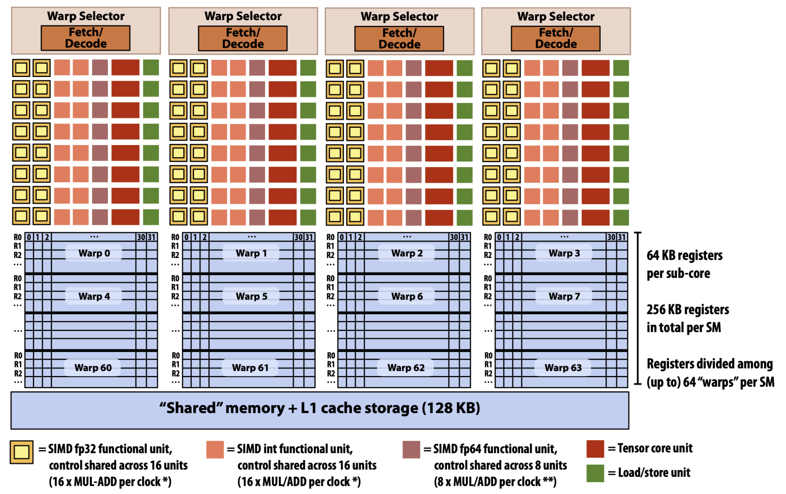
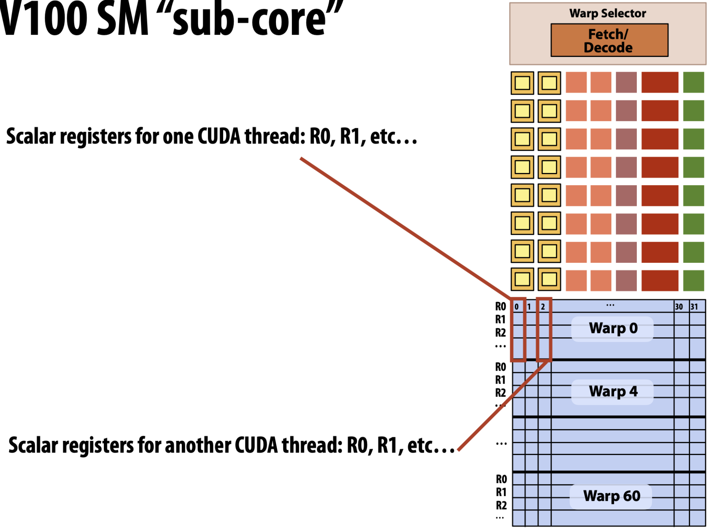
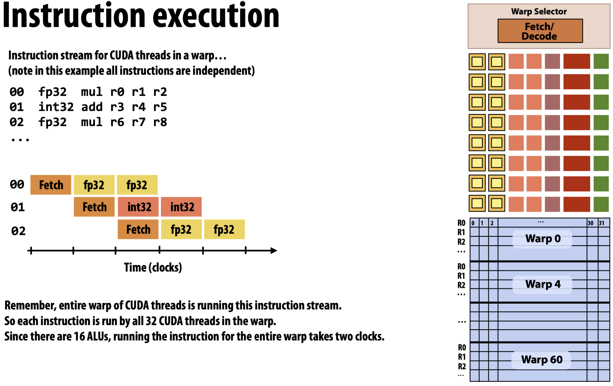
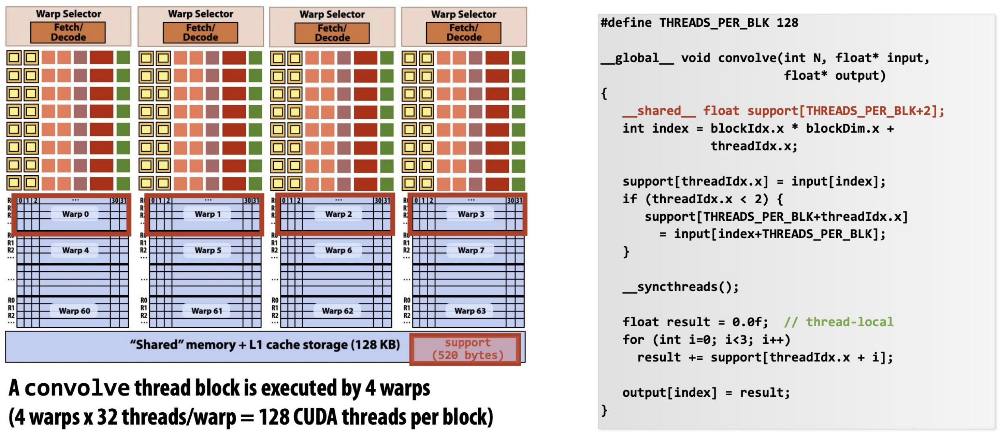
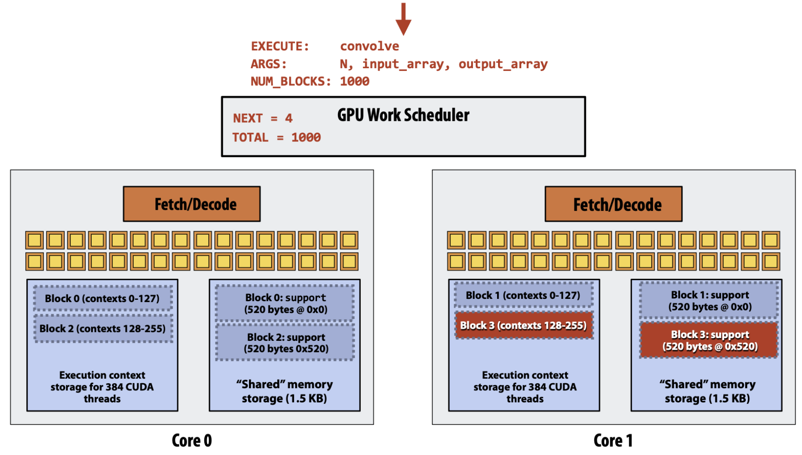
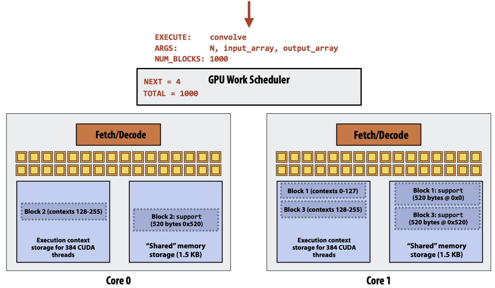
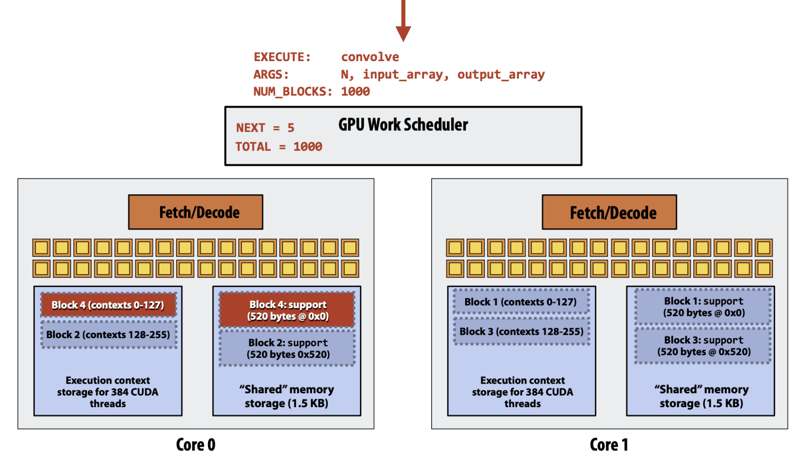
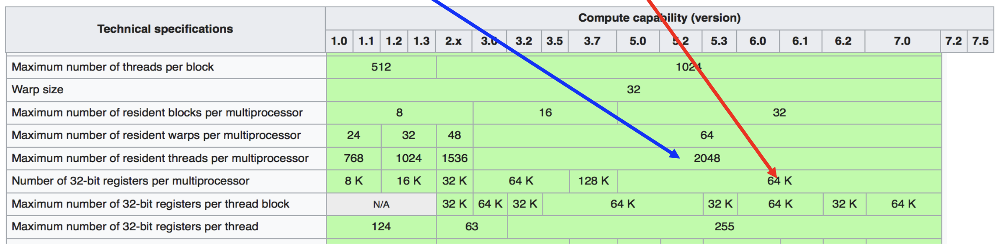

서울대학교 컴퓨터공학부 유승주 교수님의 "고급 컴퓨터 구조" 강의를 필기한 내용입니다.
#draft 본 강의록은 아직 정리가 완료되지 않았습니다.
NVIDIA V100 Architecture

- 원래는 저 fetch / decode 로 묶인 한 단위가 SM 으로 불렸는데
- V100 에 와서는 이 단위는 Sub-core 라고 이름붙게 되고 이 sub-core 여러개가 묶인 것이 하나의 SM 이 된다.
- 그리고 그에 따라 저 sub-core 들이 Shared memory 를 공유하게 되고,
- Sub-core 에 Warp 가 하나씩 돌게 된다.
- 그래서 위와 같은 architecture 에서는, 하나의 warp 에서 32개의 Thread 가 돈다는 가정 하에, SM 에서 한번에 실행되는 warp 는 4개일 것이고, 한번에 도는 thread 의 개수는 128 개일 것이다.
- 하지만 이 말이 Thread block 의 크기가 128 이 된다는 것은 아니다.
- 뒤에서도 설명하겠지만, Thread block 은 SM 에 scheduling 되는 단위이고, 이것은 register 의 잔량과 shared memory 의 잔량에 의해 결정된다.
Sub-core

- 이 sub-core 를 좀 자세히 보면 다음과 같다.
- 일단 이놈은 하나의 fetch - decode logic 을 따라가고,
- 여러개의 functional unit 들 아래
- Warp 60 개에 대한 register 들이 쭉 있다.
- 그리고 각 warp register 들을 자세히 보면 32 개의 column 이 있다. 즉, 하나의 column 이 하나의 thread 에게 할당되는 register 들인 것이다.

- 그리고 자세히 보면 functional unit 들 중에서 노란색 상자로 그려져 있는 FP32 연산이 16개가 있고, 살구색 상자로 그려져 있는 INT32 연산도 16개 있는 것을 알 수 있다.
- 즉, warp 는 32 개 인데 이를 위한 functional unit 은 그의 절반인 16개 밖에 없는 것이다.
- 이에 따라서 왼쪽의 Pipeline 처럼 한번 fetch 를 한 다음에는 FP32 와 INT32 연산에 2cycle 씩 걸리게 되는 것이다.
- 거기에 보라색으로 표현되어 있는 functional unit 은 8개밖에 없는 것을 보면, 이것에 대한 연산은 4cycle 이 걸린다고 유추해볼 수 있다.
Thread Block Scheduling Example (w/ 1D-Convolution Code)

- 이러한 architecture 하에, 어떻게 thread block 이 SM 에 scheduling 되는지 이전 강의 에서의 1D-Convolution 예시를 가지고 알아보자.
- 일단 하나의 thread block 에는 128 thread 가 들어간다고 가정하면, 이놈이 필요한 데이터는 130개의 FP32 이다.
- 왜냐면 Window size 가 3인 1D-Convolution 이므로 128개에 추가적으로 2개가 더 필요한 것.
- 즉, 이는 520byte 에 해당하므로, shared memory 에 520byte 만큼의 여유 공간이 있어야 Thread block scheduler 는 해당 SM 에 thread block 을 할당해줄 수 있다.
- 일단 하나의 thread block 에는 128 thread 가 들어간다고 가정하면, 이놈이 필요한 데이터는 130개의 FP32 이다.

- Thread block 을 SM 에 할당할 때는, thread block scheduler 는 더 이상 할당할 수 없을 때 까지 계속 각 SM 들에게 thread block 을 할당해 준다.
- 위 예제에서는 좀 그림이 다르게 그려져 있다; 그냥 저 두 Core 0 과 1 이 각각 SM 이고, fetch-decode 가 하나씩 있는 것은 그냥 그려려니 해라.
- 각 SM 에서 할당할 수 있는지 없는지를 판단하는 것은 크게 2개의 요소에 의해 결정된다: 사용할 수 있는 register file 의 개수와 shared memory 잔량.
- 그래서 위의 예제에서는 shared memory 의 잔량이 1.5KB 인데, 하나의 thread block 은 520byte 를 요구하기 때문에 세개까지는 할당하지 못하는 것이다.

- 그리고 신나게 실행을 하다가 어떤 thread block 이 끝나서 위 그림처럼 빈 공간이 생기면,

- 그 자리에 또 다음 thread block 을 할당해주는 식으로 흘러간다.
Latency Hiding
- 이전 강의 에서 말한 것 처럼, SM 에는 thread 가 최대한 많이 들어있어야 memory access 등에 의해 warp 에 stall 이 발생하더라도 다른 warp 를 꺼내 실행하여 latency hiding 을 할 수 있는 가능성이 열린다.
- 그럼 어떻게 하면 더 많은 thread 를 넣을 수 있는지 살펴보자.
Tiling
- 위의 thread block scheduling 을 보면 SM 에 할당할 수 있는 thread 의 개수는 일단 shared memory 에 의해 제한된다는 것을 알 수 있다.
- 근데 input data 의 크기는 이 shared memory 보다 크기 때문에 이것을 적당히 잘라서 shared memory 로 올릴 수 있도록 해야 한다. 이것이 Tiling 이다.
CUDA Compute Capability

- 위 표는 위키피디아 에 나와있는 CUDA Compute Capability 인데, 이놈을 읽는 방법을 간단히 알아보자.
- 일단 맨 첫줄은 Thread block 의 최대 크기를 나타낸다. 즉, 이것은 SM 에 scheduling 하는 단위의 최대 크기인 것. CUDA 6.0 기준으로, 이 값은 1024 (1K) 이다.
- 그리고 빨간색 화살표가 나타내는 값은 32bit register 의 최대 개수이다. 마찬가지로 CUDA 6.0 기준으로, 이 값은 64K 이다.
- 마지막으로 파란색 화살표가 나타내는 값은 SM 에 할당될 수 있는 최대 thread 의 개수이다. 이것은 CUDA 6.0 기준으로 2048 (2K) 이다.
- 이 부분에서 저 thread block size 와 헷갈릴 수 있다. Thread block size 는 SM 에 “한번에” 몇개의 thread 를 할당할 수 있는지를 나타내는 값이고, 이 값은 SM 에 할당될 수 있는 thread 의 최대 개수이다. 즉, SM 에 thread block 여러개가 할당되었을 때 이 값을 넘을 수는 없다는 의미이다.
- 이것에 대해 예시로 좀 알아보자. 우선 내가 짠 kernel 이 필요로 하는 32bit register 의 개수가 64개라고 해보자.
- SM 의 register 의 최대 개수 (빨간 화살표) 로 계산한, 하나의 SM 에서 이 kernel 을 실행할 수 있는 thread 의 개수는 1K 개 인것을 알 수 있다.
- 이때, 일단 이것은 첫번째 줄에 있는 thread block 의 최대 thread 개수인 1024 (1K) 개를 넘지는 않는다.
- 그런데, 저 파란색 화살표가 가리키고 있는 SM 에 들어갈 수 있는 최대 thread 개수인 2048 (2K) 개에 비하면 절반밖에 안되는 것을 알 수 있다.
- 따라서 SM 에는 thread 가 최대 2K 까지 들어갈 수 있는데 register 최대개수에 걸려 1K 밖에 넣을 수 없고, 이 경우에는 Occupancy 가 50% (1K / 2K) 인 것을 알 수 있다.
- 하지만 이때 kernel 을 최적화해서 kernel 이 필요로 하는 32bit register 의 개수가 32개로 줄였다고 해보자.
- 그럼 32bit register 의 총 개수인 64K 를 이용해 thread 의 최대 개수를 계산해 보면 2K 가 되고,
- 따라서 이때의 Occupancy 는 100% (2K / 2K) 가 되는 것을 알 수 있다.
- 다만, 이때 주의할 것은 그렇다고 thread block 의 크기가 2K 인 것은 아니다. 왜냐면 첫번째 줄에 나와있는 thread block 의 최대 크기가 1K 인 만큼, 이때에도 여전히 thread block 의 수는 1K 이다. 하지만 이제 SM 에 thread 를 2K 개 까지 넣을 수 있으므로, SM 에는 thread block 두개가 scheduling 되게 되는 것이다.
- 여기서 주의할 점은 Occupancy 가 100% 가 된다고 해서 utilization 이 100% 가 되는 것은 아니라는 것이다.
- 가령 memory access 가 많은 경우라면, Occupancy 가 100% 여도 결국에는 이 latency 를 hiding 하지 못해서 stall 이 발생하게 된다.
- 하지만 반대로 compute heavy 한 작업이라면, 이러한 높은 occupancy 는 좋은 성능을 가져올 수 있다.
이후 강의는 나중에 정리할 예정입니다.